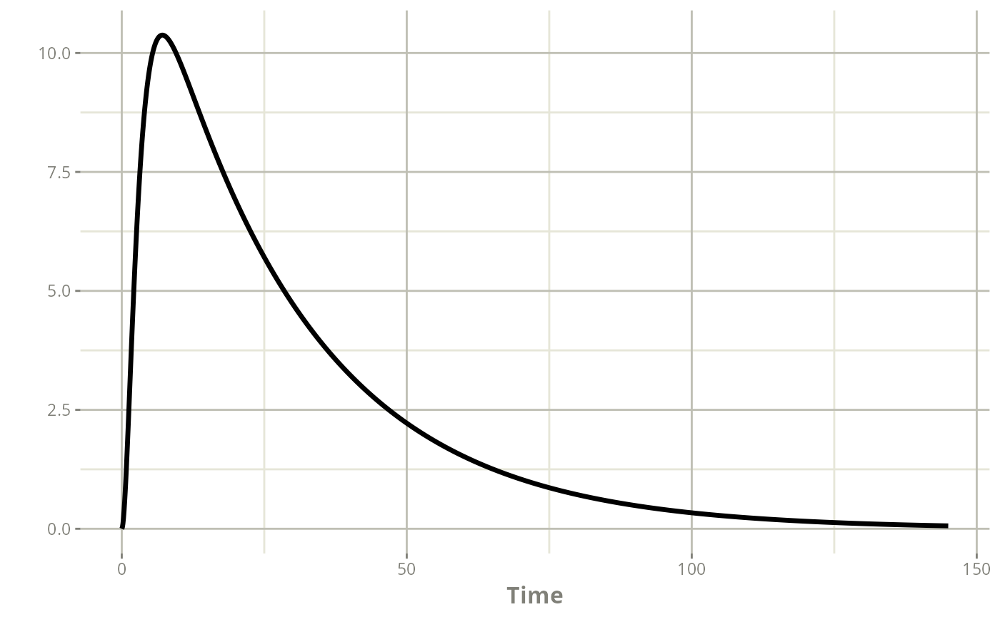
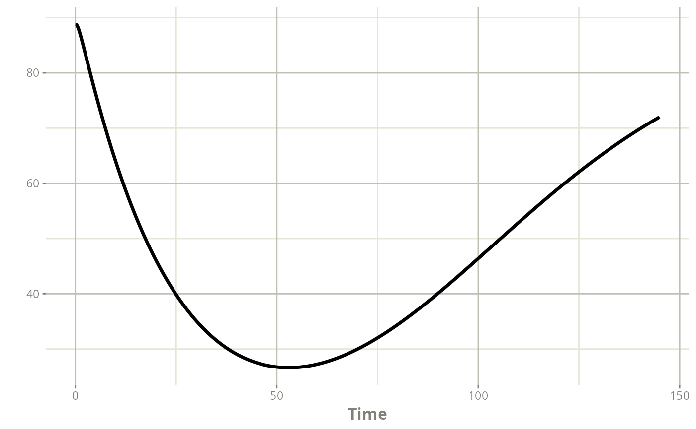

A different error model can be defined for multiple endpoints models (eg. PK-PD, parent-metabolite, blood-urine…).
To obtain individual estimations, consistency in the naming convention must be maintained across the following:
As many residual error models as desired can be defined. Each model
defined in the named list error_models must have its counterpart in the
named list sigma, and the names must match those defined in
the DVID column of the dataset.
An example can be seen below, utilizing the warfarin data and model (provided by Tomoo Funaki and Nick Holford) from the nlmixr documentation (https://nlmixr2.org/articles/multiple-endpoints.html).
mod_warfarin_nlmixr <- list(
ppk_model = rxode2::rxode({
ktr <- exp(THETA_ktr + ETA_ktr)
ka <- exp(THETA_ka + ETA_ka)
cl <- exp(THETA_cl + ETA_cl)
v <- exp(THETA_v + ETA_v)
emax = expit(THETA_emax + ETA_emax)
ec50 = exp(THETA_ec50 + ETA_ec50)
kout = exp(THETA_kout + ETA_kout)
e0 = exp(THETA_e0 + ETA_e0)
##
DCP = center/v
PD=1-emax*DCP/(ec50+DCP)
##
effect(0) = e0
kin = e0*kout
##
d/dt(depot) = -ktr * depot
d/dt(gut) = ktr * depot -ka * gut
d/dt(center) = ka * gut - cl / v * center
d/dt(effect) = kin*PD -kout*effect
##
cp = center / v
pca = effect
}),
error_model = list(
cp = function(f,sigma){
g <- sigma[1]^2 + (sigma[2]^2)*(f^2)
return(sqrt(g))
},
pca = function(f,sigma){
g <- sigma[1]^2 + (sigma[2]^2)*(f^2)
return(sqrt(g))
}
),
theta = c(THETA_ktr=0.106,
THETA_ka=-0.087,
THETA_cl=-2.03,
THETA_v=2.07,
THETA_emax=3.4,
THETA_ec50=0.00724,
THETA_kout=-2.9,
THETA_e0=4.57),
omega = lotri::lotri({ETA_ktr + ETA_ka + ETA_cl + ETA_v + ETA_emax + ETA_ec50 +
ETA_kout + ETA_e0 ~
c(1.024695,
0.00 , 0.9518403 ,
0.00 , 0.00 , 0.5300943 ,
0.00 , 0.00, 0.00, 0.4785394,
0.00 , 0.00, 0.00, 0.00, 0.7134424,
0.00 , 0.00, 0.00, 0.00, 0.00, 0.7204165,
0.00 , 0.00, 0.00, 0.00, 0.00, 0.00, 0.3563706,
0.00 , 0.00, 0.00, 0.00, 0.00, 0.00, 0.00, 0.2660827)}),
sigma = list(
cp=c(additive_a = 0.144, proportional_b = 0.15),
pca=c(additive_a = 3.91, proportional_b = 0.0)
)
)
warf_01 <- data.frame(ID=1,
TIME=c(0.0,1.0,3.0,6.0,24.0,24.0,36.0,36.0,48.0,48.0,72.0,
72.0,144.0),
DV=c(0.0,1.9,6.6,10.8,5.6,44.0,4.0,27.0,2.7,28.0,0.8,31.0,
71.0),
DVID=c("cp","cp","cp","cp","cp","pca",
"cp","pca","cp","pca","cp","pca","pca"),
EVID=c(1,0,0,0,0,0,0,0,0,0,0,0,0),
AMT=c(100,0,0,0,0,0,0,0,0,0,0,0,0))
warf_01
#> ID TIME DV DVID EVID AMT
#> 1 1 0 0.0 cp 1 100
#> 2 1 1 1.9 cp 0 0
#> 3 1 3 6.6 cp 0 0
#> 4 1 6 10.8 cp 0 0
#> 5 1 24 5.6 cp 0 0
#> 6 1 24 44.0 pca 0 0
#> 7 1 36 4.0 cp 0 0
#> 8 1 36 27.0 pca 0 0
#> 9 1 48 2.7 cp 0 0
#> 10 1 48 28.0 pca 0 0
#> 11 1 72 0.8 cp 0 0
#> 12 1 72 31.0 pca 0 0
#> 13 1 144 71.0 pca 0 0posologyr can compute the EBE for the combined PKPD model with
poso_estim_map()
map_warf_01 <- poso_estim_map(warf_01,mod_warfarin_nlmixr)
map_warf_01
#> $eta
#> ETA_ktr ETA_ka ETA_cl ETA_v ETA_emax ETA_ec50
#> -0.32052193 -0.54227235 0.79432182 -0.02986447 0.02383273 -0.28133882
#> ETA_kout ETA_e0
#> -0.30872226 -0.08386652
#>
#> $model
#> ── Solved rxode2 object ──
#> ── Parameters ($params): ──
#> THETA_ktr ETA_ktr THETA_ka ETA_ka THETA_cl ETA_cl
#> 0.10600000 -0.32052193 -0.08700000 -0.54227235 -2.03000000 0.79432182
#> THETA_v ETA_v THETA_emax ETA_emax THETA_ec50 ETA_ec50
#> 2.07000000 -0.02986447 3.40000000 0.02383273 0.00724000 -0.28133882
#> THETA_kout ETA_kout THETA_e0 ETA_e0
#> -2.90000000 -0.30872226 4.57000000 -0.08386652
#> ── Initial Conditions ($inits): ──
#> depot gut center effect
#> 0 0 0 0
#> ── First part of data (object): ──
#> # A tibble: 1,451 × 18
#> time ktr ka cl v emax ec50 kout e0 DCP PD kin
#> <dbl> <dbl> <dbl> <dbl> <dbl> <dbl> <dbl> <dbl> <dbl> <dbl> <dbl> <dbl>
#> 1 0 0.807 0.533 0.291 7.69 0.968 0.760 0.0404 88.8 0 1 3.59
#> 2 0.1 0.807 0.533 0.291 7.69 0.968 0.760 0.0404 88.8 0.0267 0.967 3.59
#> 3 0.2 0.807 0.533 0.291 7.69 0.968 0.760 0.0404 88.8 0.102 0.885 3.59
#> 4 0.3 0.807 0.533 0.291 7.69 0.968 0.760 0.0404 88.8 0.219 0.783 3.59
#> 5 0.4 0.807 0.533 0.291 7.69 0.968 0.760 0.0404 88.8 0.373 0.681 3.59
#> 6 0.5 0.807 0.533 0.291 7.69 0.968 0.760 0.0404 88.8 0.557 0.590 3.59
#> # ℹ 1,445 more rows
#> # ℹ 6 more variables: cp <dbl>, pca <dbl>, depot <dbl>, gut <dbl>,
#> # center <dbl>, effect <dbl>
#>
#> $event
#> id time amt evid
#> <int> <num> <num> <int>
#> 1: 1 0.0 NA 0
#> 2: 1 0.0 100 1
#> 3: 1 0.1 NA 0
#> 4: 1 0.2 NA 0
#> 5: 1 0.3 NA 0
#> ---
#> 1448: 1 144.6 NA 0
#> 1449: 1 144.7 NA 0
#> 1450: 1 144.8 NA 0
#> 1451: 1 144.9 NA 0
#> 1452: 1 145.0 NA 0The observation/time curves for both endpoints can also be plotted
plot(map_warf_01$model,"cp")
plot(map_warf_01$model,"pca")